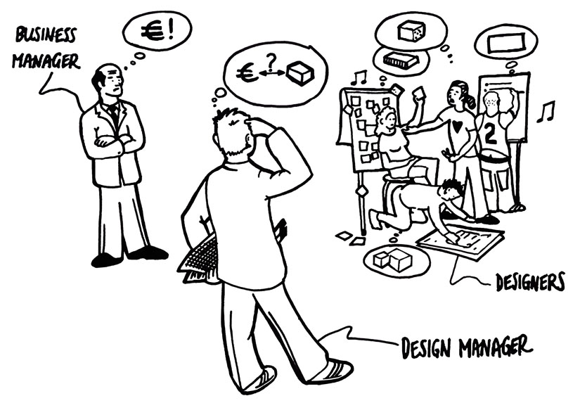
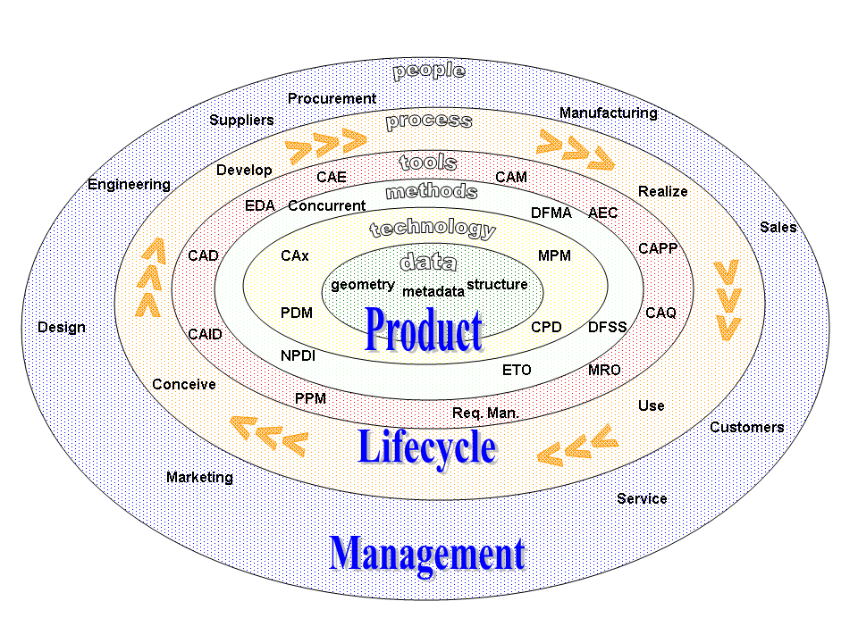
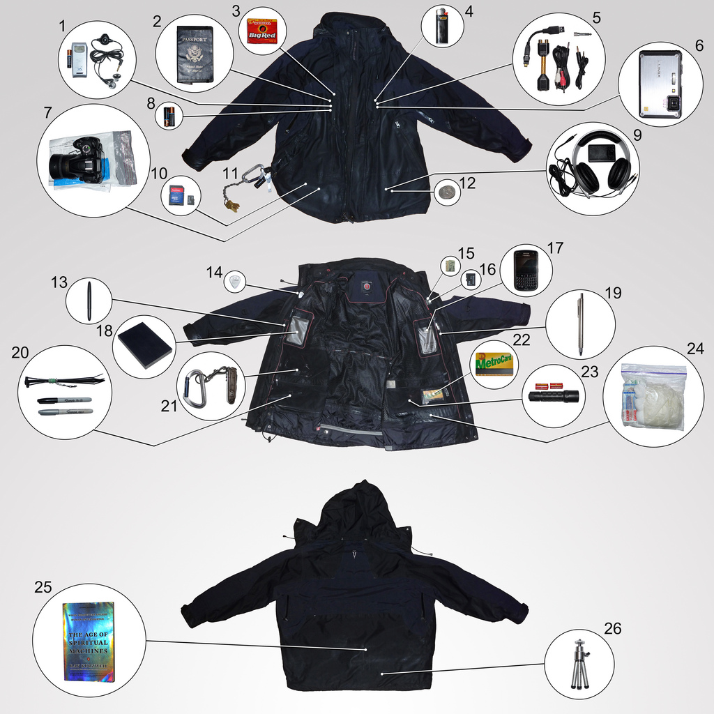

How to Align UX with Product Management
The introduction of UX to a company’s workflow is often a straightforward process. There’s a common understanding that you will be delivering improvements to products that will enable better acceptance of those products in the market.
However, the role of the product manager can often clash with the UX role. Why? Well… they really ought to be the same people. Product managers should be championing and deploying UX already to ensure their own product’s viability. The fact that you’ve been brought on to deliver UX can be threatening for the product manager.
In some cases this threat is going to end up on the receiving end of outright hostility. In others it’s going to be more that the product manager throws a little spanner in the works at every turn whilst maintaining a reasonable profile. In others still, it’s going to be a case of butting heads over things without rancour but without really incorporating recommendations from the UX colleague. So how do we go about aligning UX work with the product manager so that the relationship works for both parties?
Product Managers Who Have the Final Say and Intend to Use It
The biggest challenge to the UX role can be the product manager who has sign off authority. This is fine if the product manager intends to embrace what you do and use it to their advantage. But in the case where they have no intention of listening to someone they perceive as a threat… it can mean that your work gets ignored each and every time.
You have to accept that change takes time to deliver. There are some simple methods that you can use to improve the chances that your work will be valued and used.
Firstly, develop a process to the UX work. Clearly communicate what you intend to do and what the results will be. Learn to broadcast the results beyond the product manager; it’s more difficult to ignore reasonable input when the whole team knows what is being suggested and why. It will also enable the product manager to better understand the reasons for the UX assignment and how it might benefit them in the long run.
Secondly, work on integrating UX as widely as possible within the organization. Again a little light pressure when people see that you work in the interests of the company may be all that’s needed to turn things round.

Author/Copyright holder: Wiki4des. Copyright terms and licence: CC BY-SA 3.
The Product Manager Wants to Make You Their Bitch
The most likely reason, which a UX person has been brought on to a team with a product manager, is that the product is already in crisis to some extent. This can mean that the product manager is operating from a position of fear. Unfortunately, this can lead to a product manager who intends to exercise control over not just the product but you and your processes as well. They see the whole relationship as a political conflict which if they don’t win… their job may be the price that they pay.
You can, hopefully, move away from this without involving senior management to intervene (don’t forget that the product manager is the one with history at the company – a head-to-head showdown early in the game may result in your job prospects being curtailed). This is done by using an evidence based approach to areas of conflict. If the product manager wants to go one way, go and user test their ideas. If they work, great, if they don’t – then you have something to guide them with.

Author/Copyright holder: Freeformer. Copyright terms and licence: CC BY-SA 3.
The Product Manager Keeps Trying to Design the Product
This is, perhaps, the most natural failing of a product manager with a new UX component to their team. They have almost certainly fulfilled the role of designer in the past to some extent. So when the new guy arrives, they don’t really know how to let go of that part of their role.
When this happens it’s often shown as the product manager dictating the “how” of things. They will start to look at your research and then decide exactly how a user’s needs should be met. This might not even be hostile just something that they believe is their job.
If you find yourself on the end of the shopping list approach e.g “If the user says x, you will do y”; it’s probably time to do a little bit more user research. Create mockups for the product managers suggested implementation and 2-3 more alternatives. Test them, show the product manager what’s working with the users or not.
Take time to map the process beyond the “how” of things. Show your product manager that you’re on their side and that there’s more to meeting a user’s needs than a snap decision.

Author/Copyright holder: [mementosis]. Copyright terms and licence: CC BY-NC-ND 2.0
The Product Manager is a User and Thinks the Product Should Be About Them
This may be the greatest challenge to overcome of all. This isn’t a case of the product manager being anti-UX, it’s where they see the UX as about them. Everything will boil down to their preferences and wants.
Again combatting this is all about developing processes and research that help the product manager see beyond themselves. The more user and customer input you can collect, the easier it should be to help them distinguish the wood from the trees. Support your processes and show how they can support the product manager.
Finally
UX and Product Managers can work incredibly well together. Product managers can own the road map, develop the UX designer’s understanding of the industry and the technologies in play, and the UX designer can help mould the product so that it achieves the user’s objectives and the product manager’s objectives.
It can take time to bring the two functions together successfully. It’s better to be patient and use a data-driven process with lots of user input than to start throwing down a gauntlet and challenging the product manager to cross a line in the sand.